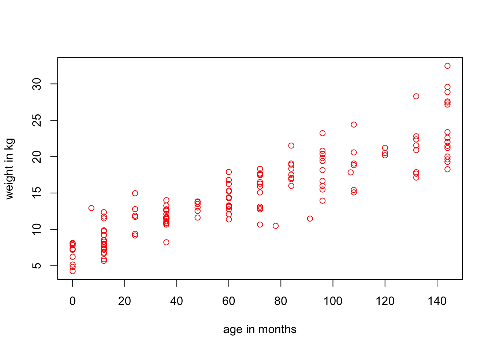
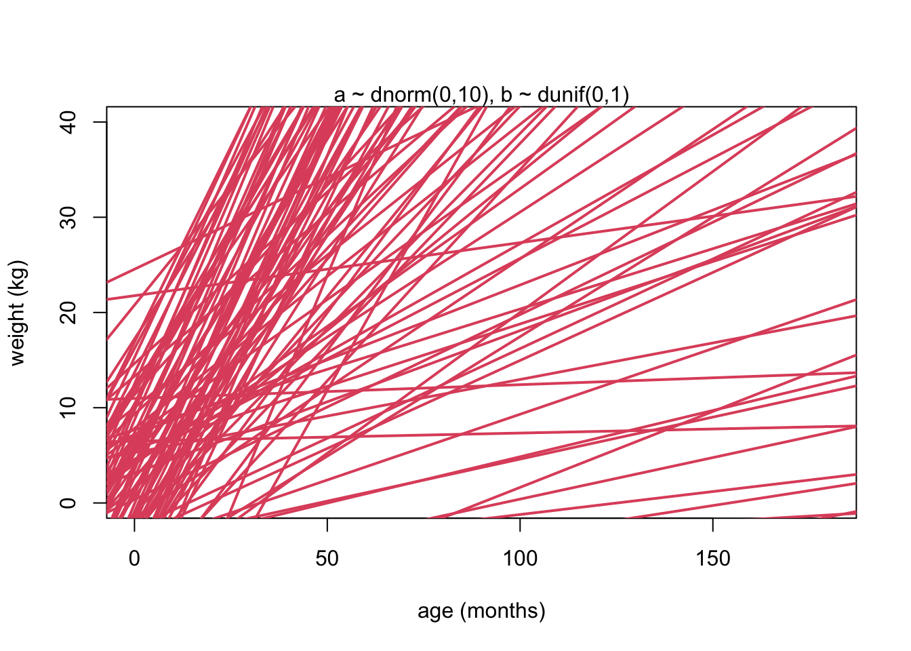
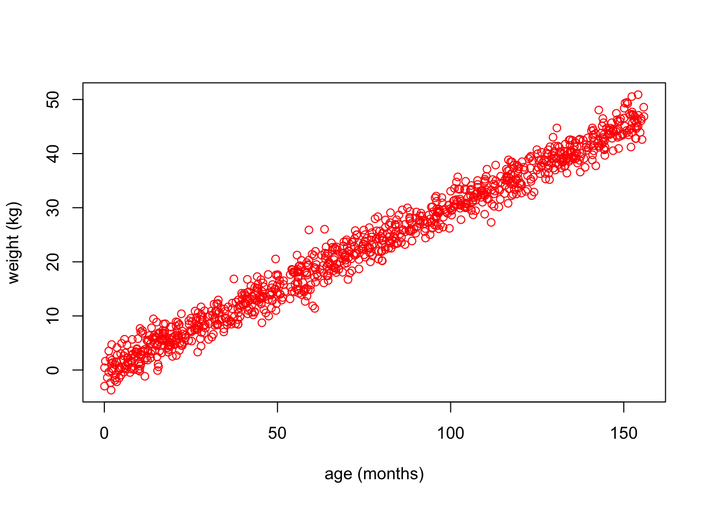
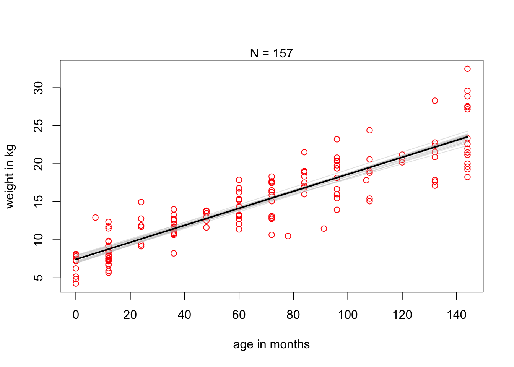
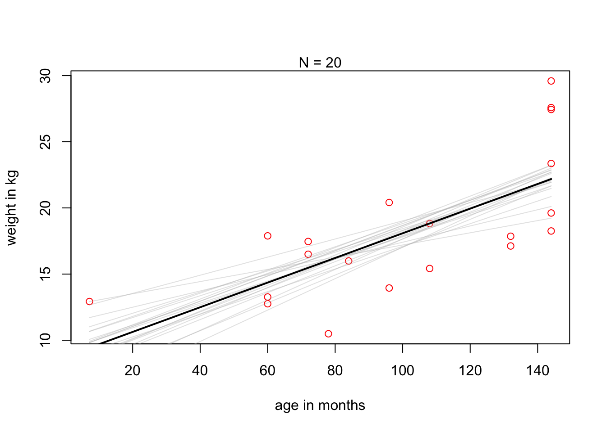

library(rethinking)
data(Howell1)
d <- Howell1
d <- d[d$age < 13, ]
d$age_months <- d$age * 12Statistical Rethinking 2026, A04
R
Bayes
workflow
causal inference
simulation
A simple linear regression exercise focused on workflow.
Link to full course on GitHub
Link to online lecture
Exercise
“Using the Howell1 dataset, consider only the people younger than 13 years old. In this sample, estimate the causal effect of each month of growth on weight. Be sure to perform a prior predictive simulation to check and justify your priors. Also try to perform a validation of your model on synthetic data.”
Prepare data
First, let’s load the package and data. Then, we’ll keep only those younger than 13 and multiply age by 12 to get age in months.
Now let’s make a simple plot and visualize the weight of the children by age.
Code
plot(
weight ~ age_months,
data = d,
col = "red",
xlab = "age in months",
ylab = "weight in kg"
)
Statistical model
We will rely on a linear regression that predicts average weight (kg) depending on age (months).
This is the model:
\[ \text{weight} \sim \mathcal{N}(\mu, \sigma) \] \[ \mu = \alpha + \beta (\text{age}_i - \overline{age}) \]
Now we can set some priors. We’ll start with very standard / boring priors.
\[ \alpha \sim \mathcal{N}(0, 10) \] \[ \beta \sim \text{Uniform}(0, 1) \]
\[ \sigma \sim \text{Uniform}(0, 5) \]
Prior predictive simulation
Let’s plot some lines from our model before letting it look at the data:
n <- 1000
a <- rnorm(n, 0, 10)
b <- runif(n, 0, 1)
plot(
NULL,
xlim = c(0, 180),
ylim = c(0, 40),
xlab = "age (months)",
ylab = "weight (kg)"
)
mtext("a ~ dnorm(0,10), b ~ dunif(0,1)")
for (j in 1:100) {
abline(a = a[j], b = b[j], lwd = 2, col = 2)
}
This is not perfect, but as McElreath said in his lecture: “There are no correct priors, only scientifically justifiable priors”.
Simulation-based validation
Let’s now generate synthetic data from our model and see if it makes any sense.
Simulate data
We need a function to generate age and weight data of hypothetical people.
sim_age_weight <- function(N, b, a) {
age_months <- runif(N, 0, 13) * 12
weight <- a + b * age_months + rnorm(N, 0, 2)
data.frame(age_months, weight)
}
dat <- sim_age_weight(1000, 0.3, 0)
head(dat) age_months weight
1 127.73533 40.107988
2 102.05646 35.698485
3 51.51473 13.405998
4 144.12372 45.704892
5 13.62038 7.811658
6 94.64760 26.192323Let’s have a look:
Code
plot(
weight ~ age_months,
data = dat,
col = "red",
xlab = "age (months)",
ylab = "weight (kg)"
)
Okay, a bit too linear maybe, but that’s fine. Nothing impossible!
Fit model
Let’s fit our model to this synthetic data:
age_mean <- mean(dat$age_months)
model_synth <- quap(
alist(
weight ~ dnorm(mu, sigma),
mu <- a + b * (age_months - age_mean),
a ~ dnorm(0, 10),
b ~ dunif(0, 1),
sigma ~ dunif(0, 5)
),
data = dat
)
p <- precis(model_synth)
p mean sd 5.5% 94.5%
a 22.7811778 0.06284801 22.6807346 22.8816211
b 0.2990002 0.00137898 0.2967964 0.3012041
sigma 1.9874675 0.04444110 1.9164420 2.0584929Okay so we’ve successfully recovered b = 0.3 from our data simulation, but what about a? We’ve set a = 0 in the simulation, but now it’s 22.78?
Fortunately that’s not a bug! sim_age_weight() defines a as weight at age = 0, but our fitted model centers on age_mean, so the fitted a is weight at the mean age instead. b doesn’t care about centering, so it comes back correctly.
Visualize
Let’s plot the simulated data (red) & the posterior mean regression line (black):
Code
post_rand <- extract.samples(model_synth, n = 20)
post_full <- extract.samples(model_synth)
a_map <- mean(post_full$a)
b_map <- mean(post_full$b)
plot(
weight ~ age_months,
data = dat,
col = "red",
xlab = "age (months)",
ylab = "weight (kg)"
)
mtext("N = 157")
for (i in 1:20) {
curve(
post_rand$a[i] + post_rand$b[i] * (x - age_mean),
col = col.alpha("grey", 0.4),
add = TRUE
)
}
curve(a_map + b_map * (x - age_mean), add = TRUE, col = "black", lwd = 2)Great!! :)
Fit the model to the real data
For the regression model, we also need the mean age:
age_mean <- mean(d$age_months)Fit model
Let’s try and fit that model using the rethinking package!
mA4 <- quap(
alist(
weight ~ dnorm(mu, sigma),
mu <- a + b * (age_months - age_mean),
a ~ dnorm(0, 10),
b ~ dunif(0, 1),
sigma ~ dunif(0, 5)
),
data = d
)
precis(mA4) mean sd 5.5% 94.5%
a 14.6869006 0.208897695 14.3530418 15.0207595
b 0.1118179 0.004568192 0.1045171 0.1191188
sigma 2.5246550 0.147789807 2.2884583 2.7608517Visualize
Okay, now let’s look at the data and the line at the posterior mean plotted (black) and 20 samples from the posterior (grey):
Code
post_rand <- extract.samples(mA4, n = 20)
post_full <- extract.samples(mA4)
a_map <- mean(post_full$a)
b_map <- mean(post_full$b)
plot(
weight ~ age_months,
data = d,
col = "red",
xlab = "age in months",
ylab = "weight in kg"
)
mtext("N = 157")
for (i in 1:20) {
curve(
post_rand$a[i] + post_rand$b[i] * (x - age_mean),
col = col.alpha("grey", 0.4),
add = TRUE
)
}
curve(a_map + b_map * (x - age_mean), add = TRUE, col = "black", lwd = 2)
If we had less data (n = 20), then the uncertainty would be larger:
Code
d_small <- d[1:20, ]
mean_age_small <- mean(d_small$age_months)
mA4_small <- quap(
alist(
weight ~ dnorm(mu, sigma),
mu <- a + b * (age_months - mean_age_small),
a ~ dnorm(0, 10),
b ~ dunif(0, 1),
sigma ~ dunif(0, 5)
),
data = d_small
)
post_rand <- extract.samples(mA4_small, n = 20)
post_full <- extract.samples(mA4_small)
a_map <- mean(post_full$a)
b_map <- mean(post_full$b)
plot(
weight ~ age_months,
data = d_small,
col = "red",
xlab = "age in months",
ylab = "weight in kg"
)
for (i in 1:20) {
curve(
post_rand$a[i] + post_rand$b[i] * (x - mean_age_small),
col = col.alpha("grey", 0.4),
add = TRUE
)
}
curve(a_map + b_map * (x - mean_age_small), col = "black", lwd = 2, add = T)
mtext("N = 20")
So, what’s the answer? For children under 13, each extra month of age adds about 0.11 kg of weight on average. The simulation-based validation showed that the model recovers the true slope, and the n = 20 version shows what happens with less data: same trend, way more uncertainty. A straight line is of course a simplification — growth isn’t linear from birth to age 13, but it does the job here.